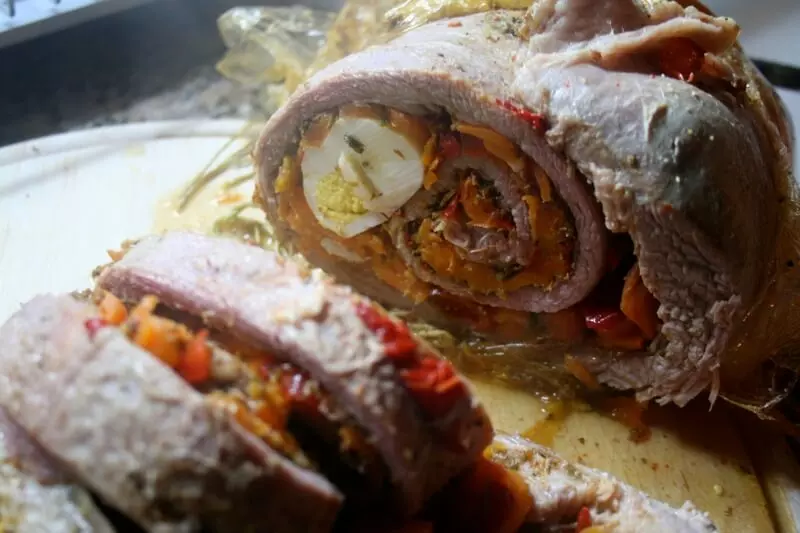
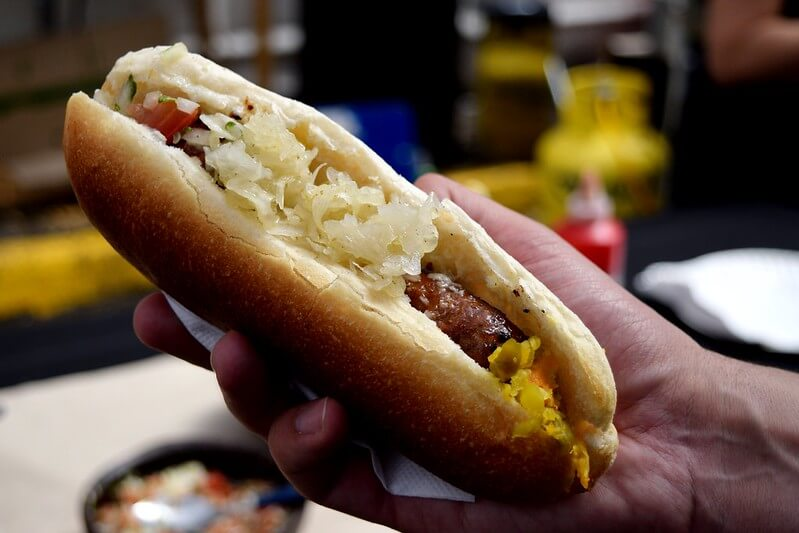

Elas são o equivalente aos nossos pastéis assados, mas se diferenciam porque têm a massa mais leve. Também podem ser servidas com diversos recheios como carne, queijo, brócolis e muitos outros.

Matambre arrolado
Ele é um saboroso bife de flanco (lateral) recheado com ovos cozidos, azeitonas, ervas e legumes. A carne é enrolada em torno do recheio e, em seguida, cozida, assada ou grelhada.

Choripán
Ele nada mais é do que um tipo de cachorro-quente, feito com linguiça assada em um pão francês, coberto de molho chimichurri como acompanhamento.